BankCompany
Simulador de Negocio Bancario
Tu equipo asume la alta dirección de un banco retail de tamaño mediano y compite con otros bancos por el mismo mercado. Cada periodo decides precios, política de riesgo, marketing, tecnología y formación para la Banca de Personas y la Banca de Empresas. El objetivo: hacer crecer el Valor de la Compañía equilibrando rentabilidad, riesgo, solvencia y competitividad.
🎮 Cartelera de Simuladores
El portafolio CompanyGame y sus avatares de IA
CompanyGame ofrece una amplia gama de simuladores de negocio organizados por nivel de dificultad y área de conocimiento. BankCompany se ubica en el área de Finanzas y banca (Niveles 6 y 7, el tramo más avanzado de la cartelera).

🤖 Avatares de IA — pendiente de archivo
Guarda la imagen de avatares como assets/avatares.png en la carpeta del proyecto y aparecerá aquí automáticamente, con el mismo estilo que la cartelera.
🙌 Ingreso a la Plataforma
Así accedes para empezar a competir
- https://plataforma.companygame.net/
- Usuario y código personal (contraseña)
- Uso 100% en la nube
- Desde cualquier dispositivo y en cualquier lugar
Entorno de Simulación
Conoce el banco que vas a dirigir antes de empezar a competir
📖 Manual del Simulador
Tu guía de referencia para cada decisión del periodo
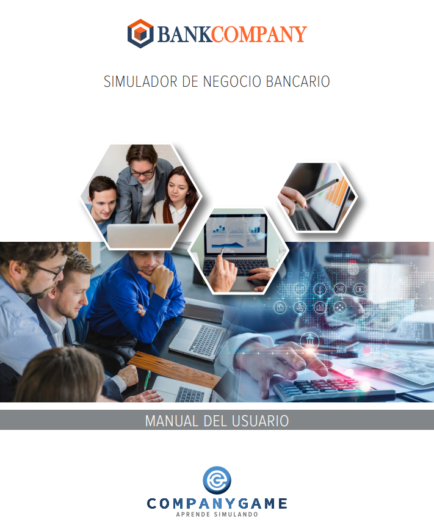
📖 Foto del manual — pendiente de archivo
Guarda la portada o una captura del manual como assets/manual-cover.png en la carpeta del proyecto y aparecerá aquí automáticamente.
El manual explica en detalle cada área de decisión, las fórmulas del simulador y cómo interpretar el Cuadro de Mando. Consúltalo siempre que tengas dudas antes de enviar tus decisiones.
📥 DESCARGAR EL MANUAL¿Qué es BankCompany?
Dirige un banco completo y aprende a equilibrar rentabilidad, riesgo y solvencia
BankCompany facilita la comprensión de los principales parámetros, ratios y palancas de gestión de un banco a través de la práctica en la toma de decisiones. No aprendes por transmisión de teoría, sino por la experiencia: aprendizaje por descubrimiento. Learning by doing.
El Simulador
Junto con tu equipo asumes el máximo puesto directivo de una entidad bancaria con el patrón de un banco retail de tamaño mediano, con dos unidades de negocio: Personas y Empresas.
Tu Misión
Alcanzar la máxima puntuación en el Valor de la Compañía, cumpliendo los requerimientos del Regulador y los objetivos del Consejo de Administración.
El Escenario
Todos los bancos parten de la misma situación y se reparten el mercado a partes iguales. Un escenario macroeconómico (PIB, tasa de interés, desempleo, IPC, ahorro…) condiciona la demanda.
Lo que integras
Conocimientos de Precios/Margen, Riesgos, Marketing, Finanzas y RRHH, junto con habilidades de análisis, toma de decisiones, trabajo en equipo y comunicación.
🔄 El ciclo de gestión que repetirás cada periodo
Analiza el entorno y la competencia, fija objetivos y directrices, toma las decisiones requeridas y revisa en todo momento los resultados obtenidos.
🔗 Cadena de Valor
Cómo el banco convierte los recursos de sus clientes en rentabilidad ajustada al riesgo
El manual resume la gestión bancaria en cuatro claves. Todas tus decisiones deben mantenerlas en equilibrio:
Rentabilidad
Hoy se mide vinculada al riesgo: toda operación con riesgo consume capital económico, el recurso escaso por excelencia, y sobre él se calcula la rentabilidad (RORAC).
Riesgo
Riesgos de crédito, mercado y operacional. Cualquier desviación respecto al estándar tiene un fuerte impacto en los resultados globales del banco.
Competitividad
El precio importa, pero no es el único factor: necesitas una valoración competitiva en servicio, marca, multicanalidad y solvencia para lograr rentabilidad sostenida.
Solvencia / Liquidez
La regulación internacional exige capital y liquidez suficientes para que los cambios de escenario no pongan en duda la sostenibilidad del banco.
🎯 ¿De qué depende tu cuota de mercado?
Frente a un mercado en constante cambio, la participación que alcanza cada banco por segmento y producto depende de dos palancas: la competitividad (satisfacer mejor que los demás las necesidades del cliente) y la gestión del riesgo (tu apetito de riesgo y el crecimiento que priorizas en cada segmento).
💳 Productos, Riesgo y Fórmulas
El catálogo de cada unidad de negocio y los indicadores que debes dominar
Cada unidad de negocio tiene su propia gama: productos de Activo (prestas dinero y asumes riesgo de crédito), de Pasivo (captas recursos de clientes) y Servicios (comisiones por transaccionalidad). La garantía se mide de 1 (mínima) a 20 (máxima): más garantía reduce la pérdida, pero genera más reticencia en el cliente.
| Unidad | Producto | Tipo | Qué es | Ingreso principal | Garantía inicial |
|---|---|---|---|---|---|
| 👤 Personas | Tarjeta | Activo | Servicio financiero básico de crédito. | Comisión anual + interés | 8 |
| Consumo | Activo | Préstamo para un bien de consumo (plazo medio 48 meses). | Comisión apertura + interés | 6 | |
| Hipotecas | Activo | Compra de vivienda con garantía real (plazo medio 25 años). | Comisión apertura + interés | 16 | |
| Cuentas corrientes · Depósitos 12/24 m | Pasivo | Depósitos a la vista y a plazo remunerados. | Mantenimiento, descubierto y gestión de tesorería | — | |
| Transacciones / Servicios | Servicio | Pagos y cobros habituales (nómina, recibos). | Comisión por operación (‰) | — | |
| 🏢 Empresas | Financiación C/P | Activo | Necesidades de tesorería (plazo ~1 año). | Comisión apertura + interés | 7 |
| Financiación M/P | Activo | Equipamiento, maquinaria, tecnología (plazo ~3 años). | Comisión apertura + interés | 10 | |
| Financiación L/P sin garantía | Activo | Inversiones de largo plazo (plazo ~5 años). | Comisión apertura + interés | 9 | |
| Financiación L/P con garantía | Activo | Inversiones de largo plazo con garantía (plazo ~5 años). | Comisión apertura + interés | 15 | |
| Cuenta corriente · Depósito 12 m | Pasivo | Depósitos a la vista y a plazo. | Mantenimiento, descubierto y tesorería | — | |
| Transacciones / Servicios | Servicio | Cobros y pagos de la empresa a través del banco. | Comisión por operación (‰) | — |
Para cada operación de activo, el simulador calcula cuánto esperas perder y cuánto capital debes reservar. Estos son los conceptos clave del riesgo:
Rating / Scoring
Califica al cliente: rating en Empresas (escala 1–9) y scoring en Personas. A más rating/scoring, menos riesgo… pero un mercado accesible más pequeño.
PD · Probabilidad de impago
Probabilidad de que la operación entre en mora. Si está por debajo del límite que fija el banco, la operación es viable.
LGD · Severidad
Parte de la deuda que no se recupera tras el impago. Las garantías la reducen: por eso la financiación con garantía tiene menor severidad.
Pérdida Esperada
PE = Inversión × PD × LGD. Es el coste del crédito implícito en toda operación y debe incorporarse al precio.
Capital Económico
Capital que debes reservar para cubrir el riesgo de cada operación. Los segmentos más arriesgados consumen más capital por cada peso invertido.
APR / RWA
Activos Ponderados por Riesgo: exposición × coeficiente de ponderación. Suman riesgo de crédito, mercado y operacional.
🧮 Fórmulas clave del manual
Margen Ordinario
MOARMargen Ordinario Ajustado al Riesgo
Coste de Crédito
RORACRisk Adjusted Return on Capital
RoRWARentabilidad ajustada al consumo regulatorio
Capitalización · ICAP
ROAEReturn on average equity
Eficiencia
Morosidad
⚙️ Áreas de Decisión
Las palancas que mueves cada periodo — y cómo construyen tu competitividad
Las decisiones se agrupan en cinco áreas. Precio y riesgo deben moverse de forma coherente: si cambias el rating/scoring objetivo sin ajustar el precio al nuevo coste de crédito, perjudicas el volumen o la rentabilidad.
Precios Personas
Por segmento: comisiones e interés de Tarjeta, Consumo e Hipoteca; mantenimiento y remuneración de Cuentas corrientes; interés de Depósitos 12 y 24 meses; comisión de Servicios.
Precios Empresas
Por segmento: comisión de apertura e interés de la Financiación CP, MP y LP (con y sin garantía); Cuenta corriente, Depósito 12 meses y comisión de Servicios.
Riesgo
Priorización de segmentos (1–10), scoring (Personas) o rating (Empresas) objetivo, garantía por producto (1–20) y presupuesto en métodos de decisión de riesgo.
Marketing y Marca
Campañas de promoción por producto en Personas y Empresas, presupuesto de marca corporativa y gasto en captación y vinculación de clientes.
Estructura Corporativa
Presupuesto en Tecnología, Multicanalidad (cajeros, mobile, call center, online) y Formación del personal en Dirección, Comercial y Riesgo.
Otras decisiones
En cualquier momento pueden surgir problemáticas o directrices que debas resolver. Estate atento para no dejar pasar oportunidades.
⭐ De las decisiones a la competitividad
El mercado evalúa a cada banco por seis factores de competitividad, ponderados por producto y segmento. Toca cada uno para ver qué decisiones lo construyen:
🎯 Segmentos
Dos unidades de negocio, seis segmentos de clientes y cuatro canales de atención
Cada unidad de negocio atiende tres segmentos con distinto perfil de riesgo y rentabilidad. En la plataforma verás los nombres entre paréntesis. Para cada segmento fijas una prioridad y un scoring o rating objetivo.
👤 Banca de Personas
Negocio del día a día con particulares: cuentas, pequeños créditos de consumo, hipotecas y depósitos. Se evalúan con scoring (escala de 100 a 220).
🏢 Banca de Empresas
Operaciones con pymes, autónomos, medianas empresas y corporaciones (y la administración pública). Se evalúan con rating (escala de 1 a 9).
📡 Canales de atención (Multicanalidad)
El banco llega a sus clientes por cuatro canales. Tú decides el presupuesto de multicanalidad y cómo repartirlo entre ellos:
Red de Cajeros
Operativa física de efectivo y consultas.
Mobile Banking
La app del banco, siempre disponible.
Call Center
Atención telefónica y resolución de incidencias.
Banca Online
Operaciones y contratación por la web.
🏆 Valor de la Compañía
Siete indicadores ponderados definen el ranking final
El Valor de la Compañía representa la cotización que los inversores asignan a tu banco: pesa tanto los resultados de este periodo como tu capacidad de mejorarlos en el futuro. Toca cada factor para ver su peso.
DescripciónEs el factor de mayor peso: se vincula directamente con los beneficios obtenidos por el banco.
¿Qué evalúa?Tanto el valor alcanzado en cada periodo como la evolución de los últimos periodos.
DescripciónEl equilibrio financiero de la entidad.
¿Qué evalúa?El cumplimiento de los requerimientos de capital y liquidez (índice de capitalización, coste de liquidez).
DescripciónParticipación alcanzada por el banco en el mercado de inversión crediticia.
¿Qué evalúa?Tus préstamos y créditos sobre el total del mercado.
DescripciónNivel de satisfacción del cliente respecto a sus expectativas.
¿Qué evalúa?Satisfacción con el servicio, el asesoramiento y la banca electrónica. Repercute en la vinculación y fidelización.
DescripciónNivel de servicio prestado al cliente.
¿Qué evalúa?Está vinculado a la formación del personal y al rendimiento del equipo.
DescripciónParticipación alcanzada por el banco en recursos de clientes (cuentas y depósitos).
¿Qué evalúa?Tu volumen de recursos captados sobre el total del mercado.
DescripciónValoración alcanzada por la marca del banco entre los segmentos de demanda.
¿Qué evalúa?El reconocimiento de la marca, impulsado por la inversión en marca y promoción y por la satisfacción del cliente.
De acuerdo con el Valor de la Compañía alcanzado por los participantes se establece el Ranking final. Además del Valor, el manual recomienda vigilar el ICAP, el ROAE, el coste de crédito, la tasa de mora, la eficiencia y el RORAC.
Cuadro de Mando
El menú EVALUAR: cinco módulos de informes para leer los resultados de tu banco
📊 Cuadro de Mando
Quince informes con los indicadores clave, la cuenta de resultados y los riesgos del banco
🏆 Valor de la Compañía
Comparativo del valor de todos los bancos: año actual frente al anterior, con su diferencia y variación porcentual.
Es el marcador que decide el ranking. Empieza siempre aquí para saber cómo vas frente a la competencia.
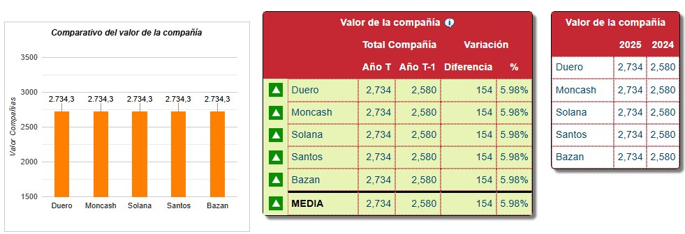
🎯 Indicadores Clave
Tabla con unos 20 KPI (inversión, participación, morosidad, coste de crédito, márgenes, eficiencia, RORAC, solvencia, capitalización, marca, multicanalidad, formación, satisfacción) con su variación.
Es el resumen ejecutivo del banco. Ojo con la Eficiencia: ahí un valor más bajo es mejor, así que una subida aparece en rojo.
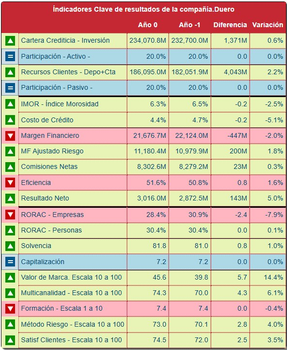
📒 Balance y Cuenta de Resultados
El balance (activo, pasivo y patrimonio) y la cuenta de resultados en cascada: margen financiero → coste del crédito → comisiones → gastos → resultado neto y ROAE.
Te muestra en qué escalón se gana o se pierde el dinero: si el problema está en el margen, en el coste del riesgo o en los gastos.
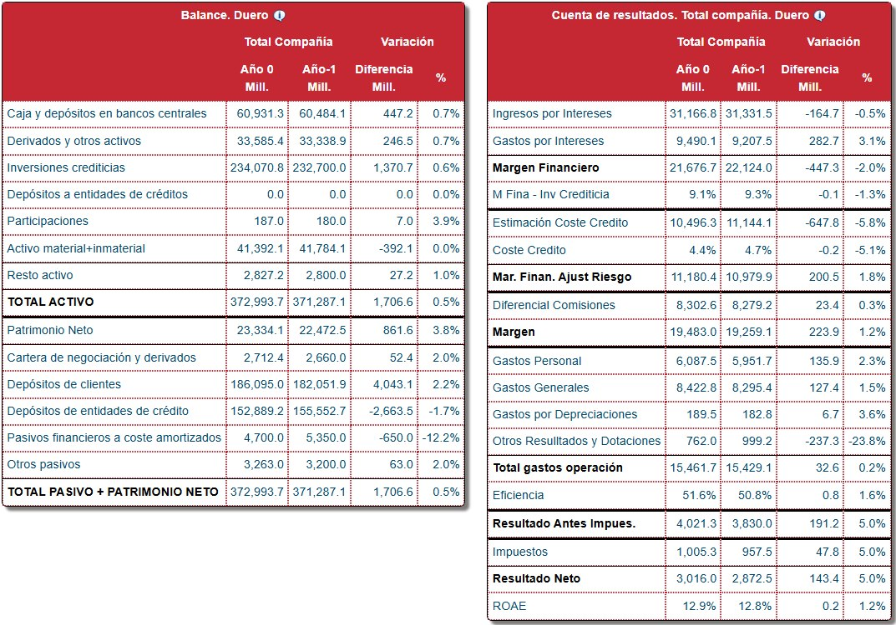
⚖️ Inversión vs. Depósitos
Volumen de activo (inversión crediticia) y pasivo (depósitos de clientes) por Personas y Empresas, con un gráfico comparativo.
Si prestas mucho más de lo que captas, dependes de financiación más cara. Vigila el equilibrio entre crecimiento del activo y del pasivo.
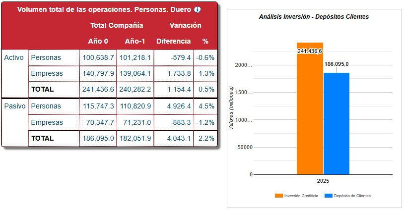
📉 Tasa de Mora
Movimiento de la cartera morosa: saldo inicial + altas − recuperaciones y fallidos = saldo final, y la tasa de morosidad total, de Personas y de Empresas.
La mora es el termómetro de tu política de riesgo: si sube, estás aceptando clientes con peor rating/scoring o con pocas garantías.
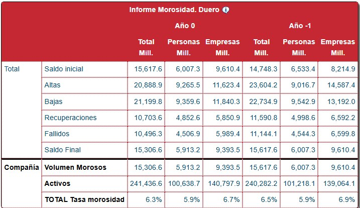
💸 Coste de Crédito
Dotaciones sobre inversión media, total y por segmento: Particular 1, Particular 2, Premium, Pymes, Media y Corpora.
Los segmentos más arriesgados tienen el coste más alto. Ese coste debe estar cubierto por el precio de cada producto.
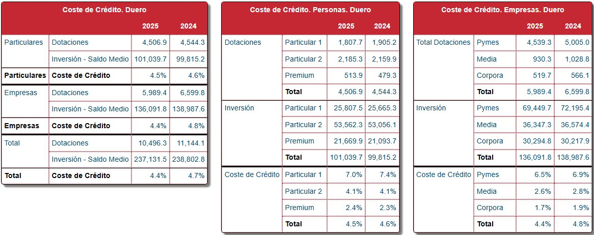
🛡️ Riesgo de Crédito
Prioridad y scoring objetivo por segmento de Personas, y nivel de garantía exigido en Tarjeta, Consumo e Hipotecas.
Es el registro de tus propias decisiones de riesgo. Compáralo con la mora y el coste de crédito para ver si la política funciona.
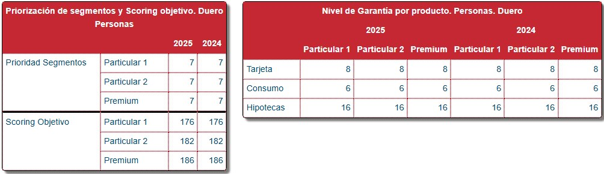
🔗 Clientes Vinculados
Porcentaje de clientes vinculados por segmento de Personas y Empresas y total del banco, frente al año anterior.
Un cliente vinculado contrata más productos y es más rentable. Es uno de los indicadores que el Consejo puede fijarte como objetivo.
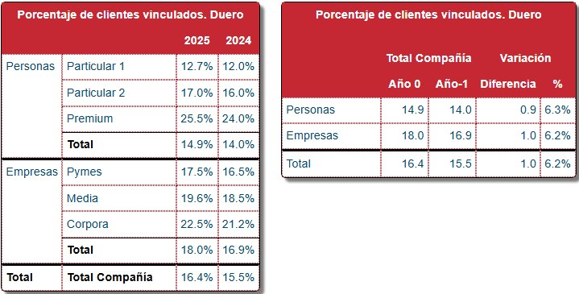
🏢 Concentración de Clientes
Los 8 mayores clientes empresa: volumen de crédito, rating, peso sobre la inversión en empresas y sobre los fondos propios.
Mide el riesgo de concentración: depender de pocos clientes grandes expone los fondos propios si uno de ellos falla.
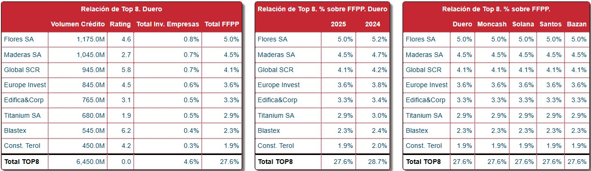
👤 Informe RORAC · Personas
Cascada de ingresos financieros a resultado neto de Banca de Personas, con su capital económico y el índice RORAC.
Te dice cuánto rinde cada unidad de capital invertida en Personas. Compáralo con Empresas para decidir dónde crecer.
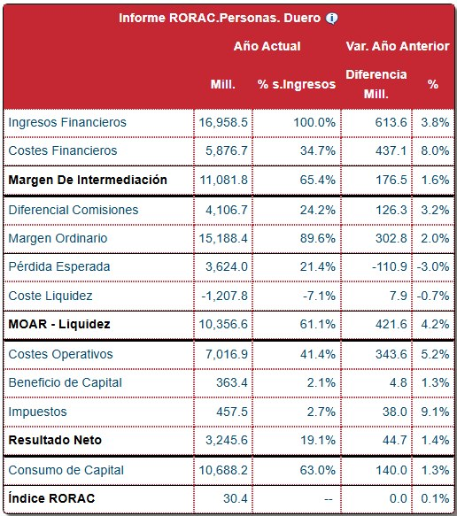
🏢 Informe RORAC · Empresas
La misma cascada aplicada a Banca de Empresas: pérdida esperada, prima de liquidez, MOAR, costes operativos, resultado neto y RORAC.
Un margen alto no basta: si consume mucho capital o tiene mucha pérdida esperada, el RORAC lo delata.
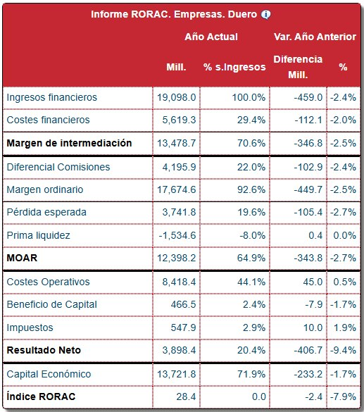
⚖️ Activos Ponderados por Riesgo
Modelo estándar: el porcentaje de ponderación por riesgo de cada producto y segmento de Personas y Empresas.
Explica por qué unos productos consumen más capital que otros: cuanto mayor la ponderación, más APR y menos margen de crecimiento.
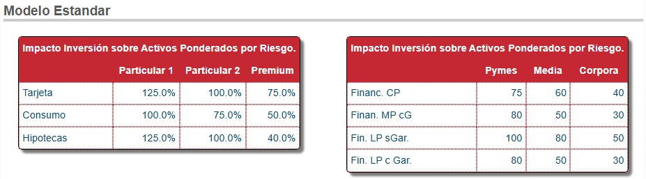
🏛️ Capitalización · Política de Dividendos
Capital social, reservas, beneficio del periodo anterior, porcentaje y pago de dividendos de todos los bancos.
Repartir dividendos reduce el capital disponible para crecer. Equilibra la retribución al accionista con tu índice de capitalización.
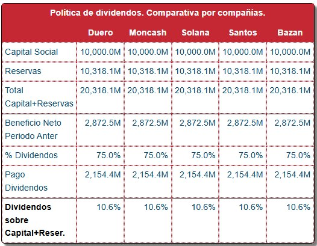
📈 Riesgo de Mercado
Brecha (gap) entre activos y pasivos sensibles a tipos de interés por plazos, y su impacto estimado ante variaciones de tipos.
Si tus pasivos se renuevan antes que tus activos, una subida de tipos encarece tu financiación más rápido de lo que suben tus ingresos.
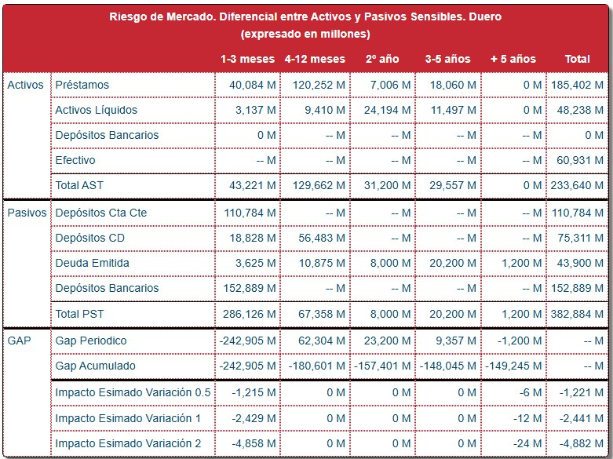
⚙️ Riesgo Operacional
Pérdida residual anual por categoría: procesos, clientes y prácticas comerciales, fraude interno y externo, sistemas, relaciones laborales y daños en activos.
Es el tercer componente de los APR. Se reduce invirtiendo en tecnología, procesos y formación.
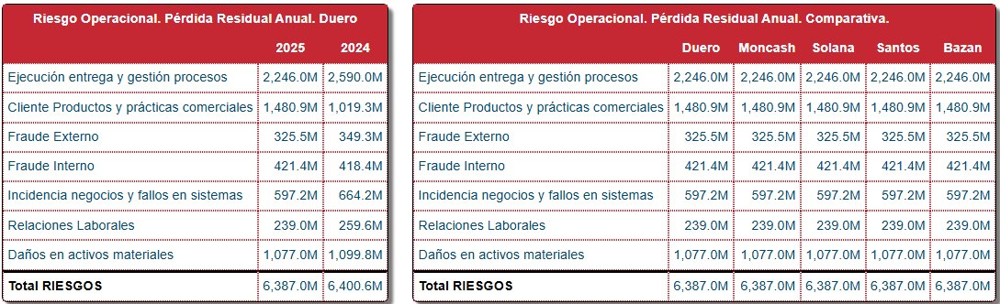
🔄 Operaciones y Volumen
Cuánto contratas, cuánto mantienes vivo y cómo se reparte tu cartera
✍️ Contratación
Volumen contratado en el periodo y participación de mercado de Tarjeta, Consumo e Hipotecas por segmento de Personas.
La contratación es el resultado directo de tu competitividad: muestra cuántas operaciones nuevas ganaste frente a los demás bancos.
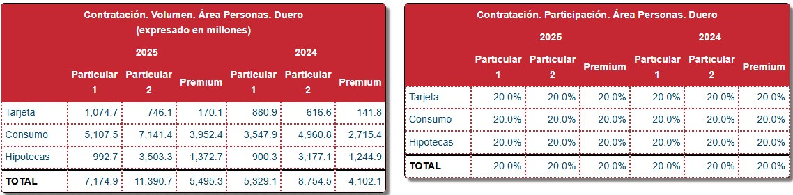
🥧 Distribución de la Inversión
Peso de cada producto y segmento sobre la inversión crediticia total de Personas y de Empresas, y su diferencia con el periodo anterior.
Te dice dónde está concentrado tu riesgo y tu capital. Compáralo con el RORAC de cada segmento.
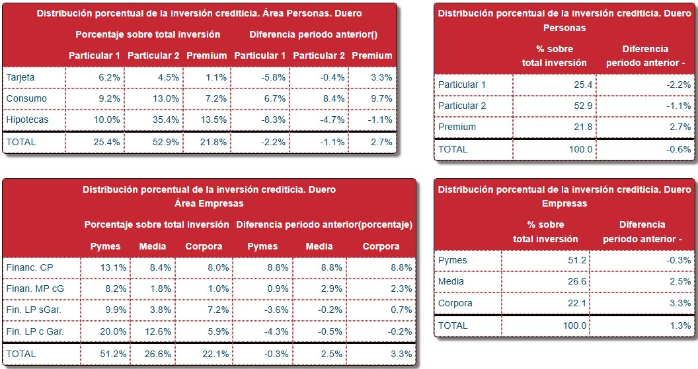
🏦 Volumen de Activo
Inversión crediticia por producto de Personas y Empresas y total del banco, con su variación y un gráfico de reparto.
El activo es lo que prestas: base de tus ingresos financieros, pero también de tu riesgo y consumo de capital.
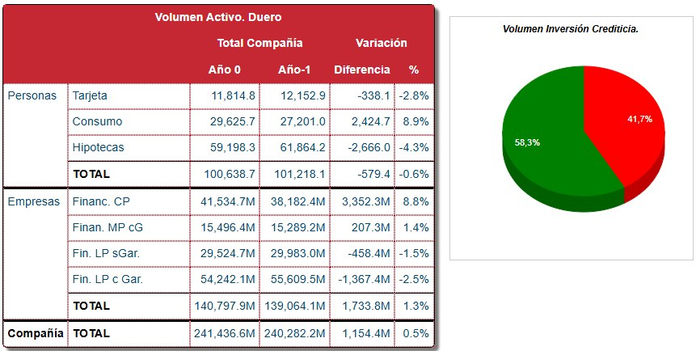
💰 Volumen de Pasivo
Recursos de clientes: cuentas corrientes y depósitos a 12 y 24 meses de Personas y Empresas, con su variación.
El pasivo financia tu activo. Captar recursos estables y baratos mejora el margen y la liquidez.
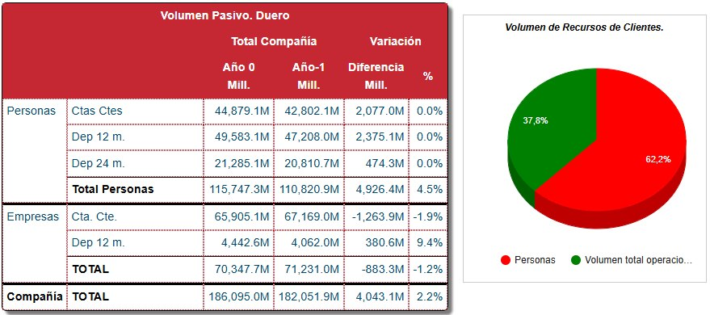
👤 Volumen · Personas
Pasivo y activo de Banca de Personas por producto, con un gráfico que compara ambos frente al año anterior.
Muestra si en Personas captas más de lo que prestas o al revés, y cómo evoluciona ese equilibrio.
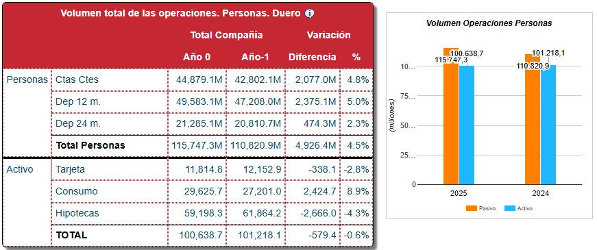
🏢 Volumen · Empresas
Pasivo y activo de Banca de Empresas por producto (financiación CP, MP y LP), con su gráfico comparativo.
En Empresas el banco suele prestar bastante más de lo que capta: vigila de dónde sale la financiación.
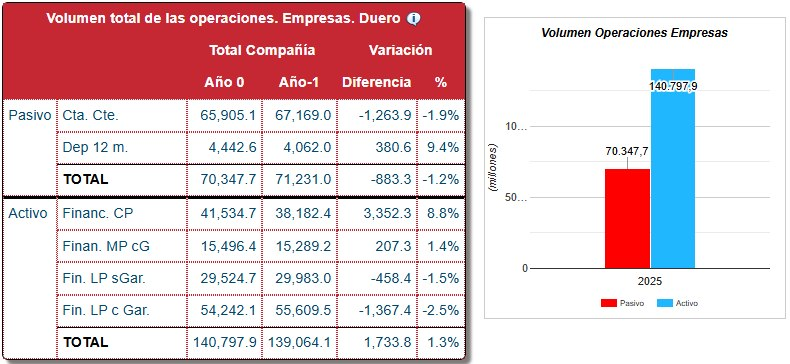
🔁 Servicios · Personas
Volumen y número de operaciones vigentes de servicios de Personas, total y por segmento.
Los servicios generan comisiones sin riesgo de crédito: rentabilidad que no consume capital.
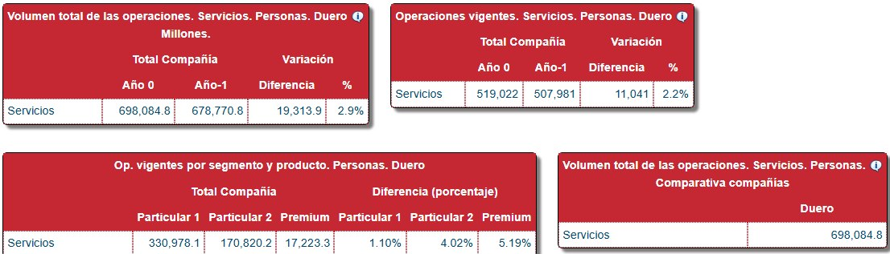
🔁 Servicios · Empresas
Volumen y operaciones vigentes de servicios de Empresas por segmento, con la comparativa entre bancos.
Te permite comparar tu transaccionalidad con la competencia y detectar si tu comisión espanta a los clientes.
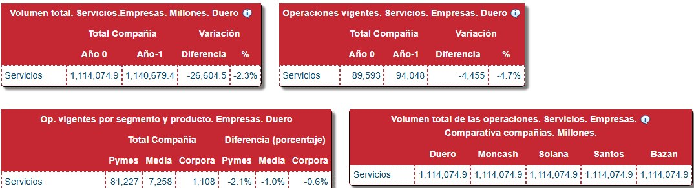
🔢 Operaciones Vigentes · Personas
Número de contratos vivos de pasivo y activo de Personas, total y por segmento, con su variación.
El número de operaciones (no el dinero) indica cuántos clientes tienes realmente y cómo crece tu base.
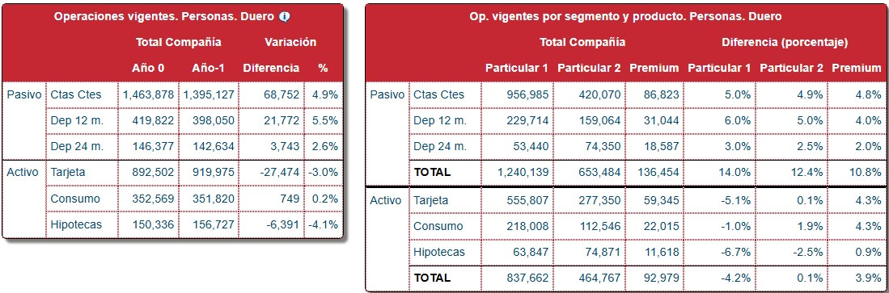
🔢 Operaciones Vigentes · Empresas
Número de contratos vivos de pasivo y activo de Empresas, total y por segmento.
Combínalo con el volumen: pocas operaciones de mucho importe significan más concentración de riesgo.
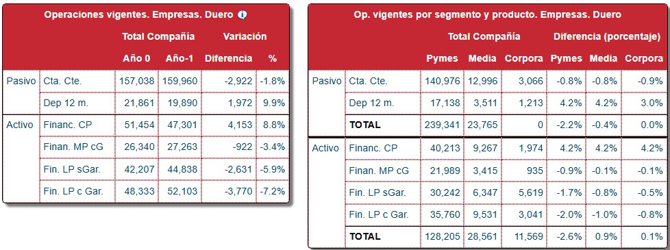
💹 Resultado de Intermediación
De dónde sale tu margen: por área, por producto, por segmento y con qué precios
📈 Análisis del Margen · Total
Ingresos y costes financieros, margen de intermediación, diferencial de comisiones y margen ordinario, con su peso sobre ingresos y variación.
Es la base de tu cuenta de resultados: si el margen cae, todo lo que viene debajo se resiente.
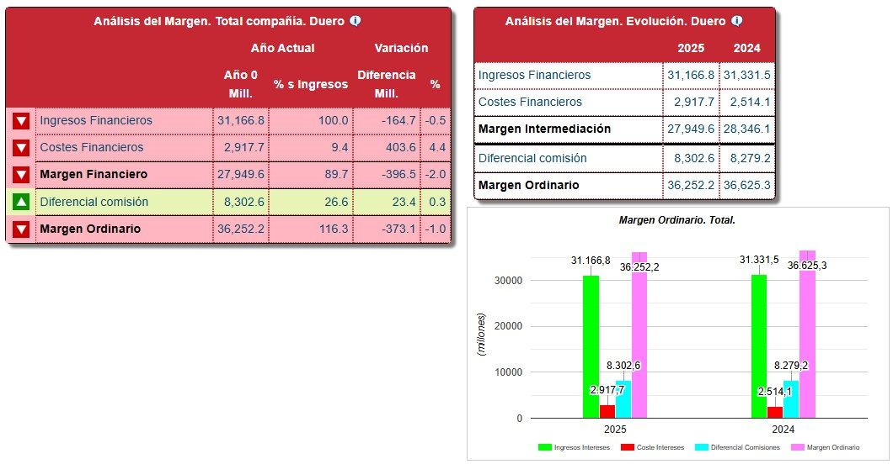
⚖️ Análisis del Margen · Por Área
El mismo análisis del margen separado para Banca de Personas y Banca de Empresas.
Te muestra qué unidad de negocio genera más margen y cuál tiene costes financieros más altos.
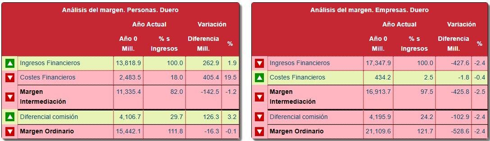
👤 Ingresos por Producto · Personas
Ingresos financieros, costes del pasivo y comisiones de cada producto de Personas, total y por segmento.
Identifica qué producto y qué segmento aportan margen… y cuáles te cuestan dinero (por ejemplo, depósitos muy remunerados).
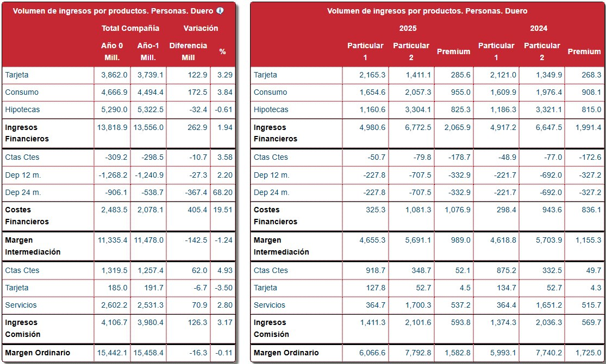
🏢 Ingresos por Producto · Empresas
Ingresos y costes por producto de Empresas (financiación CP, MP y LP, cuentas y depósitos), total y por segmento.
Te dice qué segmento empresarial sostiene tu margen y dónde conviene ajustar precios.
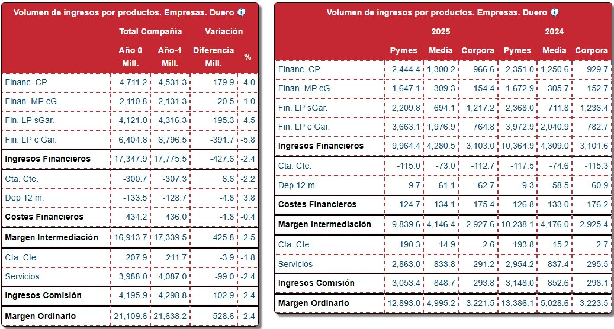
🏷️ Informe de Precios · Personas
Los precios aplicados por tu banco en cada producto y segmento de Personas: intereses, comisiones y cuotas, este año y el anterior.
Conecta tus decisiones de precio con el margen obtenido: así ves el efecto real de cada cambio.
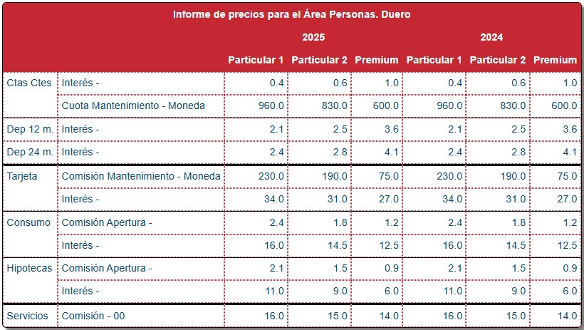
🏷️ Informe de Precios · Empresas
Los precios aplicados en cada producto y segmento de Empresas: intereses, comisiones de apertura, cuotas y comisión de servicios.
Revisa que el precio de cada financiación cubra la pérdida esperada de su segmento.
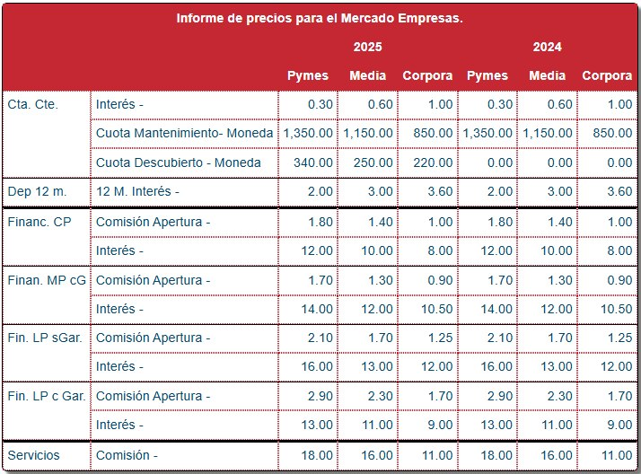
🧮 RORAC
Rentabilidad ajustada al riesgo: pérdida esperada, capital económico y costes
💸 Pérdida Esperada por Áreas
Volumen de activo, pérdida esperada y su porcentaje sobre la inversión, para el total del banco, Personas y Empresas.
Es el coste del riesgo que debes cubrir con el precio. Si sube más que el margen, pierdes rentabilidad.
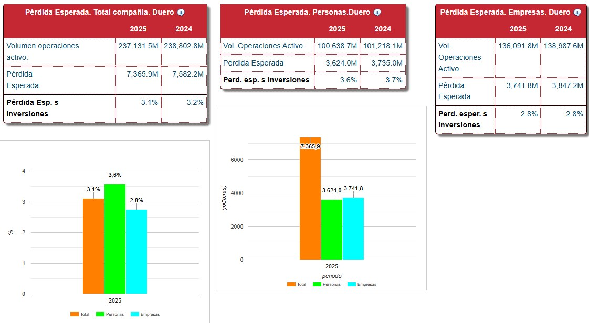
👤 Pérdida Esperada · Personas
Por producto y segmento: inversión crediticia, PD (probabilidad de impago), LGD (severidad) y pérdida esperada. Agregado de cosechas.
Aquí ves la fórmula PE = Inversión × PD × LGD en acción: las hipotecas, con garantía, tienen la severidad más baja.
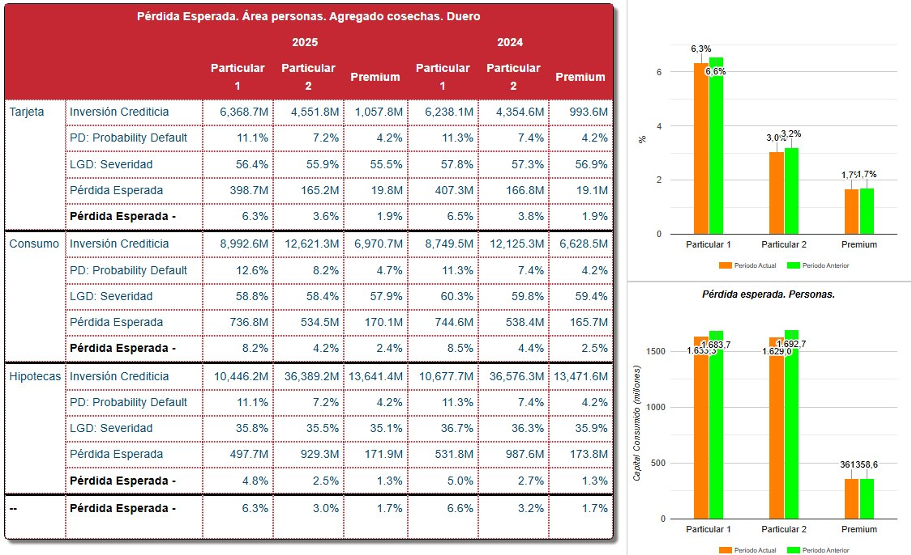
🏢 Pérdida Esperada · Empresas
PD, LGD y pérdida esperada de cada financiación (CP, MP, LP con y sin garantía) por segmento.
Muestra cómo la garantía reduce la severidad y por qué las Pymes necesitan precios más altos.
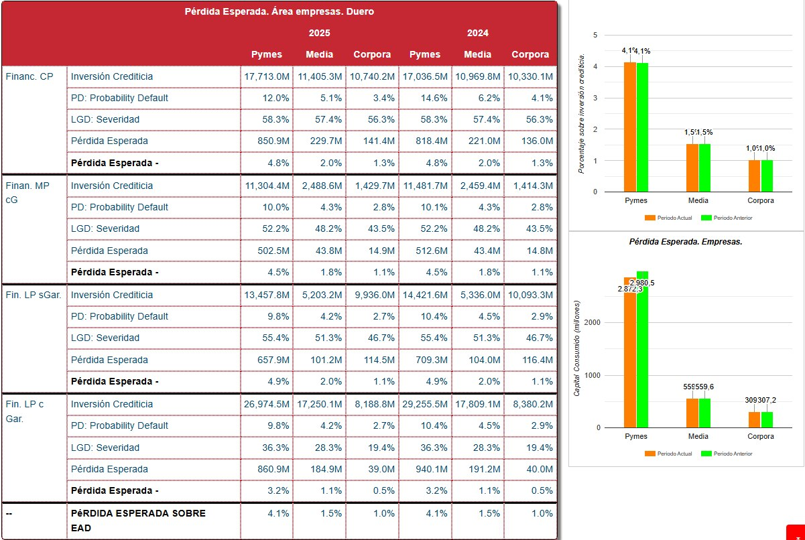
🏛️ Capital Económico · Evolución
Capital económico consumido sobre las inversiones, en porcentaje y en millones, para el total, Personas y Empresas.
El capital es el recurso escaso del banco. Saber cuánto consumes te dice cuánto más puedes crecer.
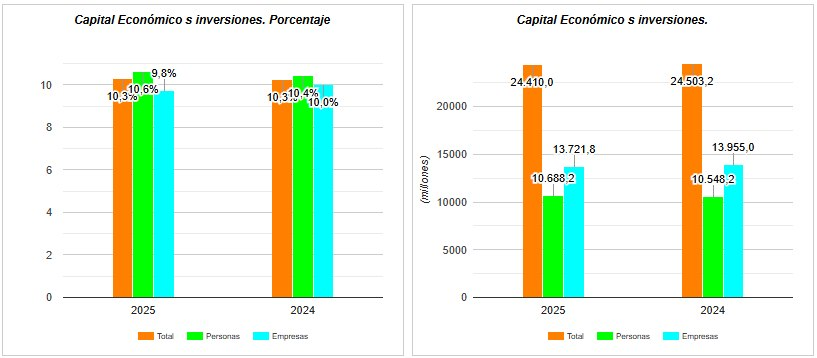
👤 Capital Económico · Personas
Volumen vigente, capital económico y su ratio por segmento de Personas, periodo actual frente al anterior.
El segmento de menor renta consume mucho más capital por peso invertido: crecer ahí exige más rentabilidad.
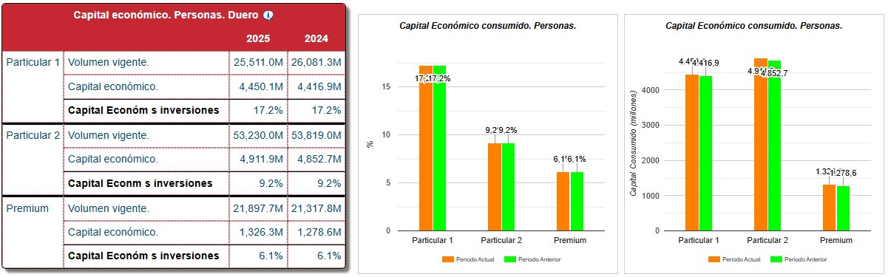
🏢 Capital Económico · Empresas
Volumen vigente, capital económico y su ratio por segmento de Empresas.
Compara cuánto capital consume cada segmento empresarial frente al margen que aporta.
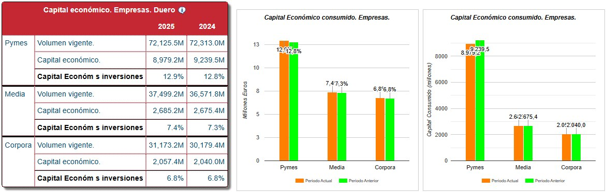
💧 Coste de Liquidez
Coste de liquidez del activo y aportación del pasivo para Personas, Empresas y el total del banco.
Prestar a largo plazo con recursos de corto plazo tiene un coste: captar pasivo estable lo reduce.
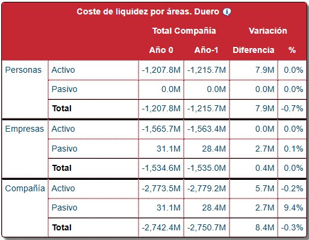
⚙️ Costes Operativos
Costes operativos sobre margen ordinario: evolución total, de Personas y de Empresas, y comparativa con los demás bancos.
Es la eficiencia vista desde el RORAC: cuanto menor el porcentaje, más margen queda para el resultado.
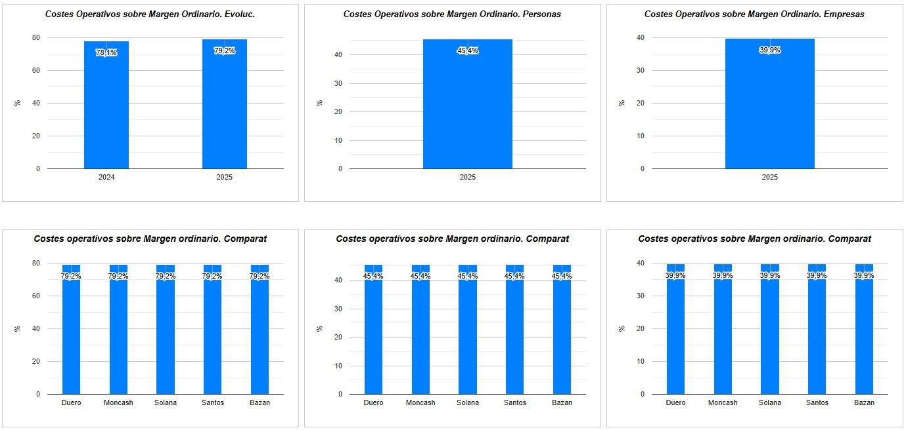
👤 RORAC por Segmento · Personas
Cascada completa hasta el índice RORAC para Particular 1, Particular 2 y Premium, con gráfico actual vs. anterior.
Te dice qué segmento de Personas crea más valor por unidad de capital: úsalo para fijar prioridades.
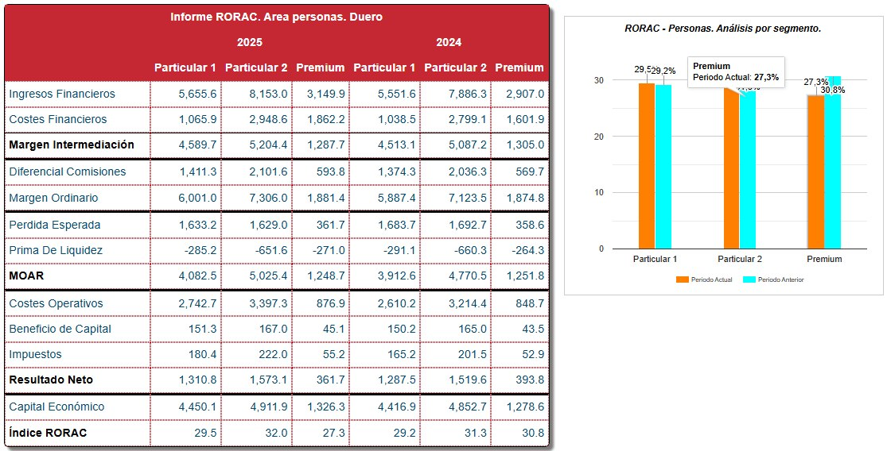
🏢 RORAC por Segmento · Empresas
Cascada completa hasta el índice RORAC para Pymes, Media y Corpora, con su gráfico comparativo.
Un segmento con mucho volumen puede tener un RORAC bajo: ajusta precio, garantías o prioridad en consecuencia.
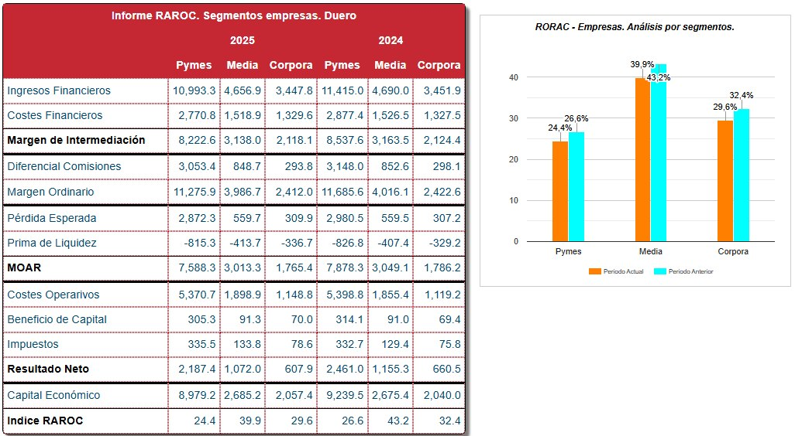
🔎 Informes y Estudios
El mercado y la competencia: precios, riesgo, morosidad, marca, servicio y satisfacción
🌐 Mercado
Volumen de recursos captados y de inversiones por producto en todo el sector, y cuota de mercado de cada banco.
Te da el tamaño del pastel: dónde está la demanda y cuánto de ella te llevas.
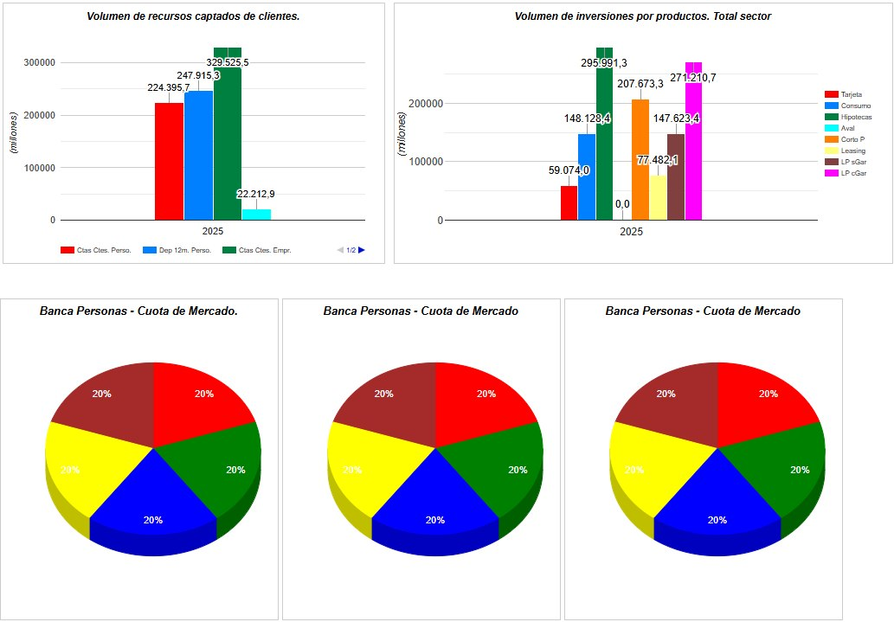
👥 Demanda por Segmentos
Población de Personas y número de Empresas por segmento, y porcentaje de usuarios por producto.
Indica qué segmentos son más grandes y qué productos usan: clave para decidir dónde promocionar.
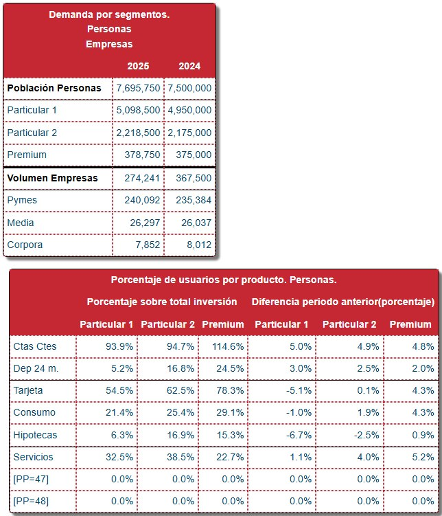
🏷️ Precios de Mercado · Personas
Los precios de todos los bancos en cada producto de Personas, año actual y anterior.
Es tu benchmarking de precios: antes de mover un precio, mira dónde está la competencia.
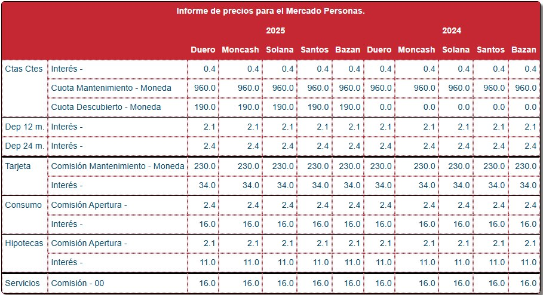
🏷️ Precios de Mercado · Empresas
Los precios de todos los bancos en cada producto de Empresas: intereses, comisiones y cuotas.
Detecta si estás caro o barato frente a los demás en cada financiación.
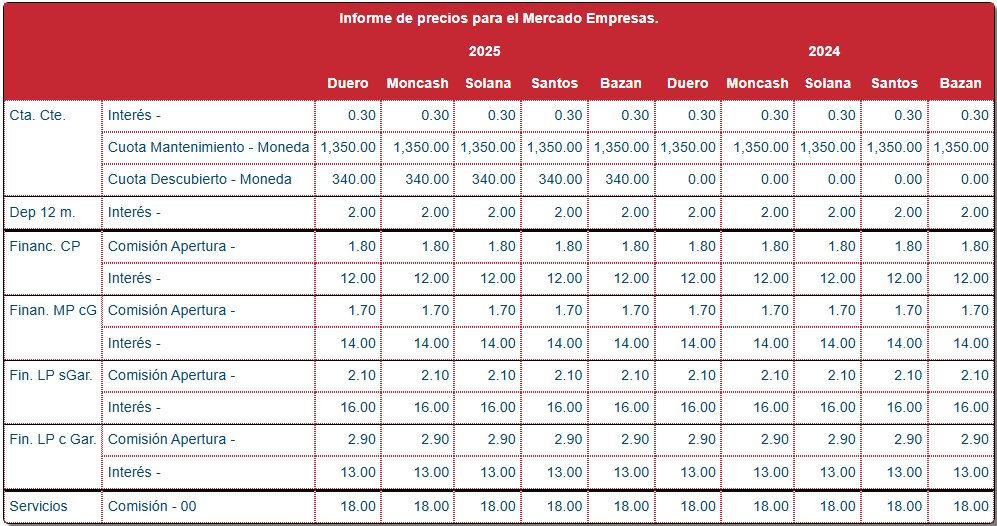
🛡️ Política de Riesgo · Personas
Prioridad, scoring objetivo y garantías por producto de tu banco y de toda la competencia.
Ver la política de riesgo de los demás te ayuda a entender por qué captan más (o menos) que tú.
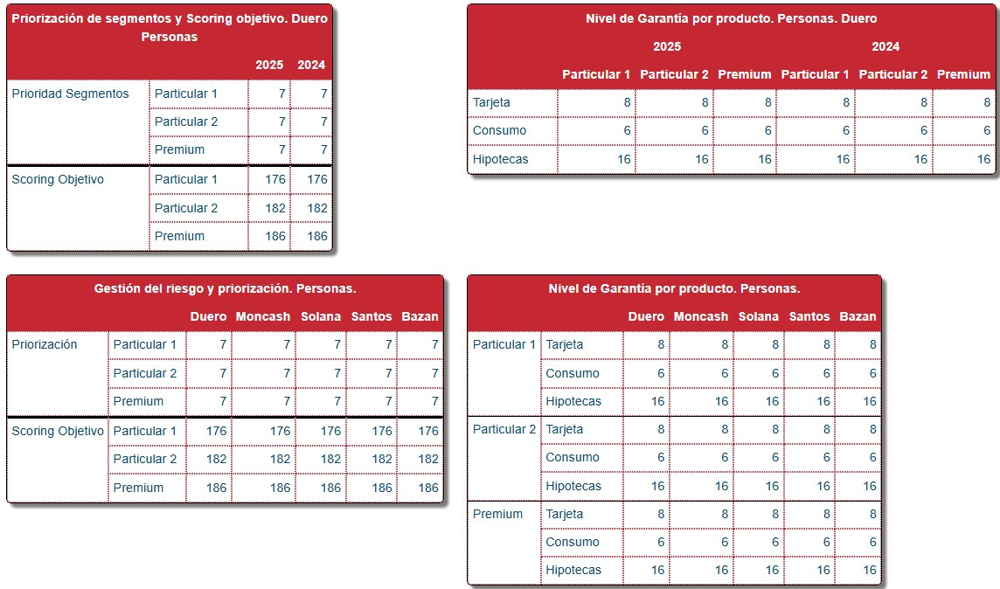
🛡️ Política de Riesgo · Empresas
Priorización, rating objetivo y nivel de garantía por producto de todos los bancos.
Si un competidor baja su rating objetivo, accede a más clientes… pero asume más mora.
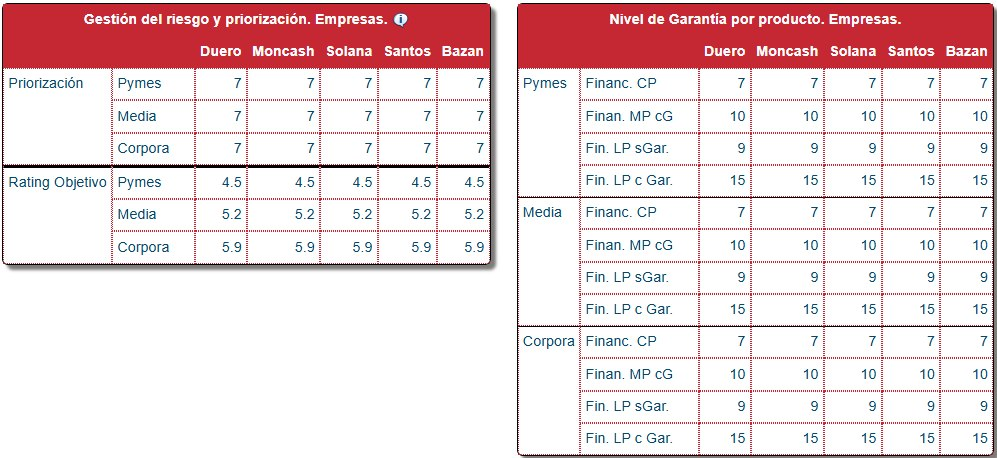
📉 Informe de Morosidad
Saldo moroso, altas, recuperaciones, fallidos y tasa de morosidad de todos los bancos, por Personas y Empresas.
Compara la calidad de tu cartera con la del mercado: una mora superior a la media es una señal de alerta.
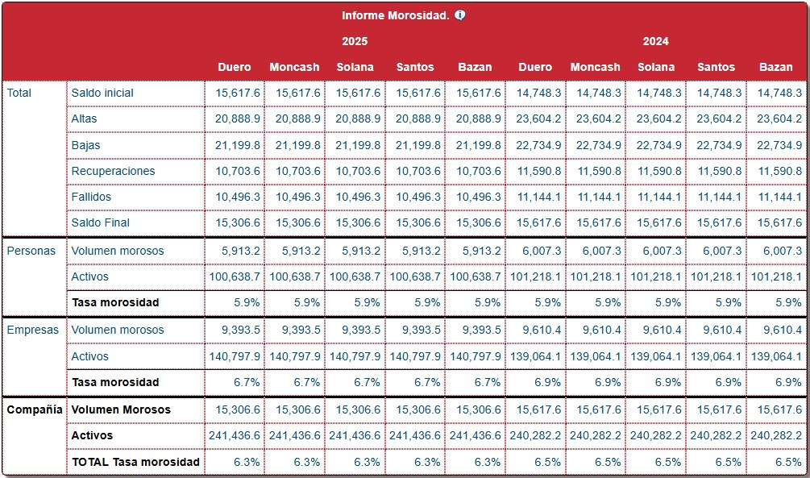
🧠 Métodos de Gestión del Riesgo
Nivel de los métodos de riesgo (escala 10–100) y su desglose: información, modelos, procesos y seguimiento.
Mejores métodos permiten seleccionar mejor a los clientes y reducir la pérdida esperada.
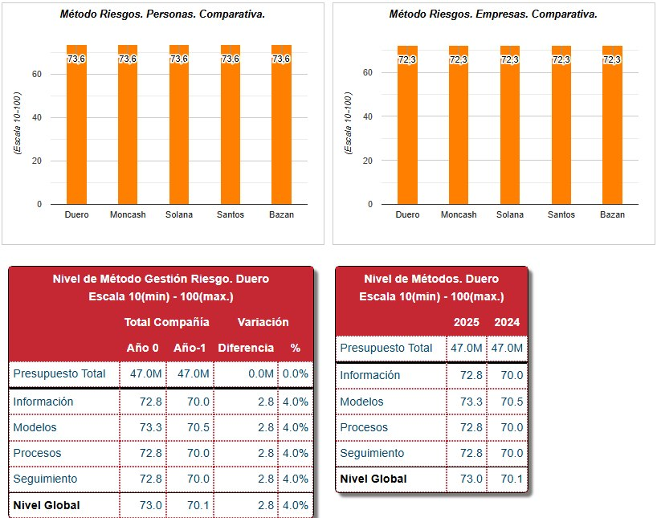
🏷️ Valor de Marca
Valor de marca (escala 10–100) en Personas, Empresas, comparativo sectorial y desglose por los seis segmentos.
La marca pesa en el Valor de la Compañía y en la percepción de solvencia: mira en qué segmentos estás débil.
🎓 Formación del Personal
Gasto y nivel de formación (escala 1–10) en Dirección, Comercial y Riesgo, y comparativa entre bancos.
La formación impulsa el servicio y el asesoramiento, dos factores de competitividad y del Valor.
😊 Satisfacción
Satisfacción del cliente (total, Personas y Empresas) y del empleado, en escala 10–100, comparada entre bancos.
Pesa un 14% en el Valor de la Compañía y alimenta la vinculación y la marca.
Las Decisiones del Simulador
Precios, riesgo, marketing y estructura: las pantallas donde diriges tu banco cada periodo
👤 Precios · Personas
Activo, pasivo y servicios de la Banca de Personas, por segmento
💳 Tarjeta de Crédito
Comisión de mantenimiento (0–400) y tipo de interés (0–60%) por segmento.
Es el producto de activo más caro para el cliente: precios altos dan margen, pero restan atractivo frente a la competencia.
🛍️ Préstamo de Consumo
Comisión de apertura (0–10%) y tipo de interés (0–35%) por segmento.
Con poca garantía, su pérdida esperada es alta: el interés debe cubrirla sin espantar a los clientes.
🏠 Hipotecas
Comisión de apertura (0–7%) y tipo de interés (0–30%) por segmento.
Largo plazo y gran volumen: su precio pesa mucho en la cartera y favorece la vinculación del cliente.
🧾 Cuentas Corrientes
Comisión de mantenimiento (0–1.200) y tipo de remuneración (0–7%) por segmento.
Equilibra ingresos por comisiones con la captación de fondos baratos y estables.
🏦 Depósitos a Plazo
Tipo de interés de los depósitos a 12 y a 24 meses (0–8%) por segmento.
Pagar más atrae ahorro y liquidez, pero encarece tu financiación y reduce el margen.
🔁 Comisión de Transaccionalidad
Comisión por transacciones y servicios, en tanto por mil (0–25‰), por segmento.
Ingresos sin riesgo de crédito; cobrar demasiado puede afectar a la satisfacción del cliente.
🏢 Precios · Empresas
Financiación, pasivo y servicios de la Banca de Empresas, por segmento
⏱️ Financiación a Corto Plazo
Comisión de apertura (0–7%) y tipo de interés (0–40%) por segmento.
Financia el capital de trabajo de las empresas: define tu margen y competitividad en cada tamaño de empresa.
📆 Financiación a Medio Plazo
Comisión de apertura (0–7%) y tipo de interés (0–40%) por segmento.
Crédito para equipamiento y maquinaria: el precio debe reflejar el riesgo de cada segmento.
🔓 Financiación L/P sin Garantía
Comisión de apertura (0–7%) y tipo de interés (0–40%) por segmento.
Sin garantía la severidad es mayor: el precio debe compensarlo sin perder a los buenos clientes.
🔒 Financiación L/P con Garantía
Comisión de apertura (0–7%) y tipo de interés (0–40%) por segmento.
La garantía reduce el riesgo y permite tipos más bajos: una buena palanca para ganar cuota a largo plazo.
🧾 Cuentas Corrientes
Comisión de mantenimiento (0–2.000) y tipo de remuneración (0–7%) por segmento.
Las empresas mueven mucho saldo transaccional: una cuenta atractiva capta recursos baratos.
🏦 Depósitos a 12 meses
Tipo de interés del depósito a 12 meses (0–8%) por segmento. En Empresas no hay depósito a 24 meses.
Fija el coste de financiarte con las empresas, en equilibrio con la liquidez y el margen.
🔁 Comisión Transaccional
Comisión por transacciones y servicios, en tanto por mil (0–25‰), por segmento.
Ingresos sin consumo de capital; su nivel afecta a la rentabilidad y a la satisfacción de las empresas.
🛡️ Riesgo
A quién prestas, con qué exigencia y con qué garantías
👤 Política de Riesgo · Personas
Priorización de cada segmento (1–10, total 21 puntos), scoring medio objetivo (1–250) y garantía por producto y segmento (Tarjeta, Consumo, Hipotecas; 0–20).
Decide qué clientes aceptas: más exigencia reduce la mora y el coste de crédito, pero también el volumen de préstamos.
🏢 Política de Riesgo · Empresas
Priorización de Pymes, Media y Corpora (1–10, total 21 puntos), rating medio objetivo (1–9) y garantía por producto (1–20).
Equilibra el crecimiento de la cartera empresarial con su calidad crediticia. Ajusta el precio al nuevo nivel de riesgo.
🧠 Métodos de Decisión de Riesgo
Presupuesto en métodos de riesgo para el Área Personas y el Área Empresas (hasta 45.000 miles cada una; total máximo 60.000).
Mejora la información, los modelos, los procesos y el seguimiento del riesgo: seleccionas mejor y pierdes menos por impagos.
📣 Marketing y Marca
Promoción por producto, marca corporativa, captación y vinculación
🏷️ Marca Corporativa
Presupuesto de marca corporativa (0–75.000 miles) y priorización entre Área Personas y Área Empresas (20–80%, suman 100%).
Construye la imagen del banco en todos sus negocios: pesa en el Valor de Marca y en la percepción de solvencia.
👤 Campañas de Promoción · Personas
Presupuesto por producto (0–50.000 miles cada uno): cuentas, depósitos 12 y 24 meses, tarjeta, consumo, hipotecas y servicios. Máximo total 150.000.
Concentra el esfuerzo comercial en los productos que quieres hacer crecer: impulsa demanda y cuota.
🏢 Campañas de Promoción · Empresas
Presupuesto por producto (0–50.000 miles cada uno): cuenta, depósito, financiación CP, MP y LP, y servicios. Máximo total 140.000.
Orienta la promoción a los productos empresariales más rentables o estratégicos según su RORAC.
🤝 Captación y Vinculación
Presupuesto de captación (0–25.000) y de vinculación (0–20.000) para el Área Empresas y el Área Personas. Máximo total 125.000 miles.
Reparte el gasto entre atraer clientes nuevos y fidelizar a los actuales: crecimiento frente a retención.
🏗️ Estructura Corporativa
Tecnología, multicanalidad y formación del personal
🖥️ Tecnología
Presupuesto en tecnología (0–55.000 miles) y su reparto en % entre sistemas de gestión, tecnología de operaciones, de seguridad y de servicios centrales.
Sostiene la eficiencia operativa, la seguridad (riesgo operacional) y la calidad del servicio.
📡 Multicanalidad
Presupuesto de multicanalidad (0–40.000 miles) y su distribución en % entre Red de Cajeros, Call Center, Mobile Banking y Online.
Define cómo te encuentra el cliente: es un factor de competitividad y de satisfacción.
🎓 Formación del Personal
Presupuesto de formación Comercial, Dirección y Riesgo (0–25.000 miles cada uno; máximo 75.000) y elección de los cursos de cada área.
Capacitar al personal mejora el servicio, el asesoramiento y el control del riesgo, tres pilares del Valor.
📚 Métodos de Implementación
Cuatro formas de integrar el simulador en tu programa académico
🔵 Método Deductivo
📋 Características
- Comienzas estudiando el manual y la teoría antes de decidir
- La primera ronda de decisiones ya está fundamentada en los conceptos aprendidos
- Análisis de resultados mediante el Cuadro de Mando
- El simulador demuestra y valida la teoría en la práctica
- Cierre consolidando teoría + evidencia de resultados
🟢 Método Inductivo
📋 Características
- Empiezas a decidir SIN leer el manual (aprendizaje por descubrimiento)
- Consultas el manual tras la primera experiencia para entender resultados
- Análisis de resultados mediante el Cuadro de Mando
- Segunda ronda informada por la teoría
- Cierre con aprendizaje consolidado tras reflexión sobre errores
🔷 Método Mixto
📋 Características
- Alternas bloques de teoría con rondas de decisión
- Cada concepto se aplica de inmediato en el simulador
- Análisis continuo con el Cuadro de Mando entre rondas
- Aprendizaje acumulativo: cada periodo construye sobre el anterior
- Cierre con evidencia del progreso a lo largo del curso
🟣 Métodos Alternos
Autónomo
Autónomo
📋 Características
- Combina sesiones presenciales con trabajo autónomo del equipo
- Disponible en formato semanal o intensivo de fin de semana
- Las decisiones se preparan de forma autónoma entre sesiones
- Máxima flexibilidad de calendario para el grupo
- El facilitador guía solo los puntos de encuentro clave
❓ Preguntas Frecuentes
Las dudas más comunes antes de iniciar la simulación
¡Gracias!
Gracias por participar en BankCompany